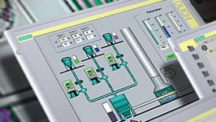

Эксперт в области
промышленной автоматизации
Новости
-

Экопласт-2012: Энергосбережение для ТПА
С такими характеристиками термопластавтоматов, как точность литья и скорость впрыска, важное значение в настоящее время имеет энергосбережение. Новые технологии энергосбережение позволяют уменьшить стоимость производства продукции методом литья. Компанией "Мараров Автоматика" разработана система энергосбережение для термопластавтоматов ЭКОПЛАСТ-2012.
-
Экопласт-2012: Энергосбережение для ТПА
С такими характеристиками термопластавтоматов, как точность литья и скорость впрыска, важное значение в настоящее время имеет энергосбережение. Новые технологии энергосбережение позволяют уменьшить стоимость производства продукции методом литья. Компанией "Мараров Автоматика" разработана система энергосбережение для термопластавтоматов ЭКОПЛАСТ-2012.